Codeviewer is a fast, read-only code viewer with a real terminal built in. Point your favourite CLI agent at a project and watch every file it touches update live, with git telling you exactly what changed.
Everything an IDE shows you, nothing that lets anything slip in by accident: Codeviewer never edits a file.
A real terminal, built in
A native PTY and a from-scratch xterm-grade emulator: truecolor, mouse, alternate screen, bracketed paste and crisp box drawing. Run Claude Code, Codex, aider, vim or htop right next to the code, and hand the agent a path:12-40 reference: ⌥⌘C copies it, the palette types it at the prompt.
Live while agents work
Files reload in place as they change on disk. Changed lines flash, the explorer marks them, and nothing you are reading jumps.
Git, read-only
Status letters in the explorer, gutter markers against HEAD with a peek at the old lines, inline blame, branch, ahead/behind and merge state, a Changes view that lists every file the branch touched as read-only diffs, and the history of any file, one commit at a time. It never writes to your repository.
Fast at any size
Virtualized everything: 100k-line files open instantly, quick-open searches 200k paths as you type, and the terminal streams megabytes per second.
Locked down
The window can only reach its own local server. Header-token auth, DNS-rebinding and CSRF guards, read-only file access with symlink containment, git hardened against hostile repositories and signed updates. Reviewed adversarially, round after round.
Native and small
A small native Mac app on the system WebKit, with real menus, window tabs and a folder picker. Built with Bun and TypeScript and zero third-party dependencies, so there is no supply chain to audit but this repository.
A tour of every feature
Screenshots of the real app, in your colour scheme. Shortcuts are shown for macOS; on Linux, ⌘ is Ctrl.
Find your way
Files, symbols, text and commands, all from the keyboard.
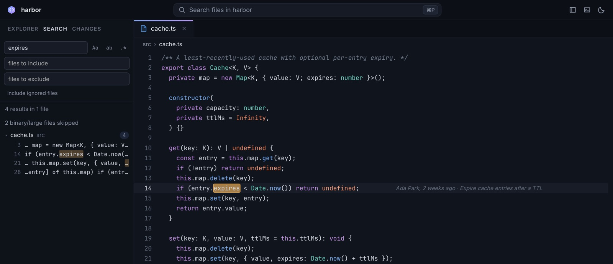
Search in files
Searches the whole project as you type: literal, whole word or regex, with case sensitivity and include/exclude globs. .gitignore is respected unless you include ignored files. Results stream in grouped by file and open at the exact match, and a Refresh appears when files change on disk. Right-click a folder for Search in Folder…
⌘⇧FF4 / ⇧F4
Go to file
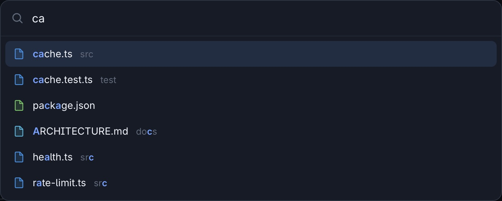
Fuzzy-matches file names first, then whole paths. Type path:line to land on a line; an empty box lists recent files.
⌘P
Go to Symbol
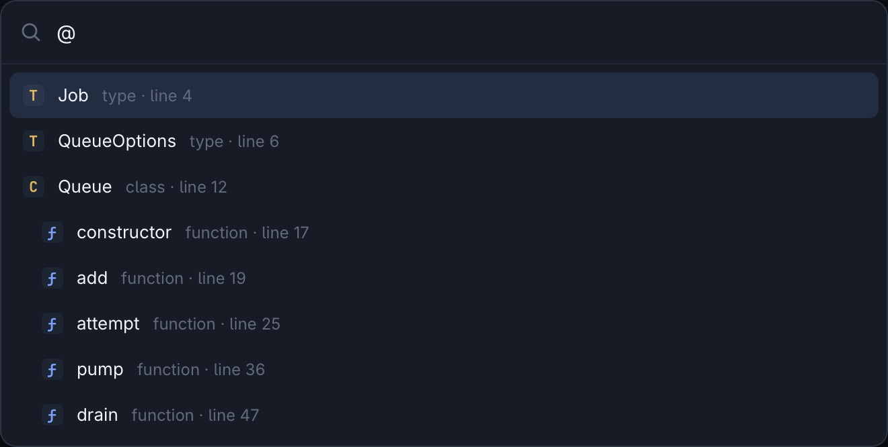
An indented outline of the file's types, classes, functions and Markdown headings; type to filter, Enter to jump. Twenty-odd languages, matched by patterns rather than a parser.
⌘⇧O
Command palette
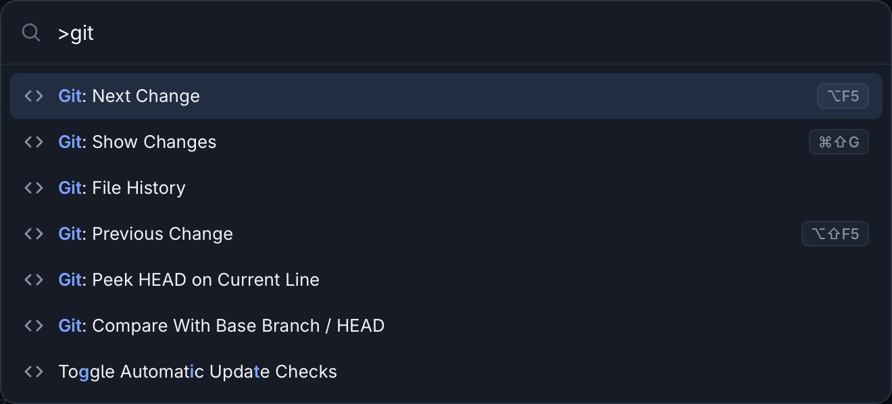
Every command with its shortcut: terminals, panels, theme, font size, git, references, updates. The same box takes > for commands, : for a line and @ for symbols.
⌘⇧P
Find in file and go to line
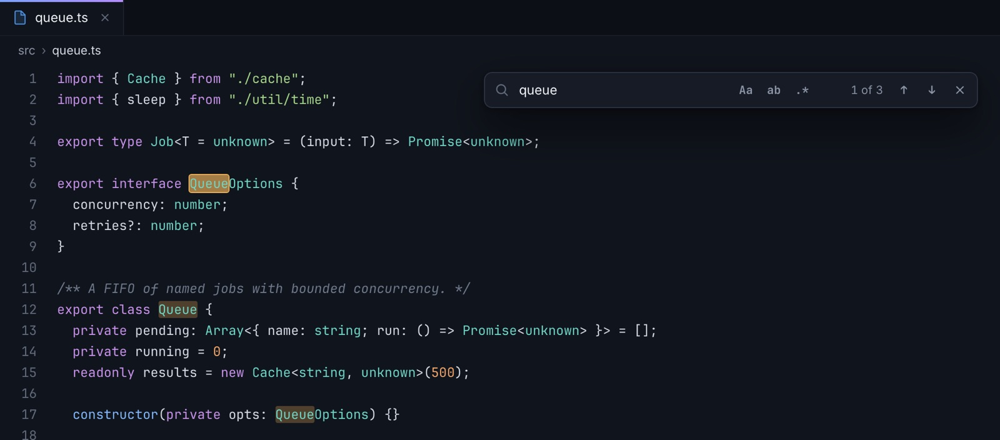
Match case, whole word and regex toggles with a live count; Enter and ⇧Enter step through the matches. ⌃G jumps to a line.
⌘F⌃G
Explorer with git status
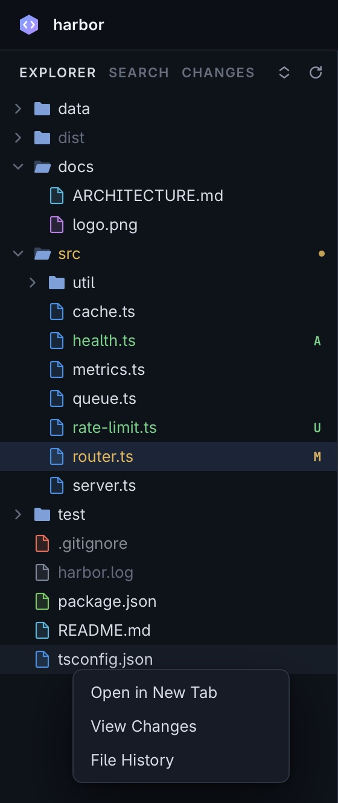
Letters for modified, added, untracked, deleted, renamed and conflicted files, rolled up into folders; ignored files are dimmed. Right-click, or ⇧F10, for Search in Folder…, View Changes and File History.
⌘⇧E⌘B
Every shortcut, one key away
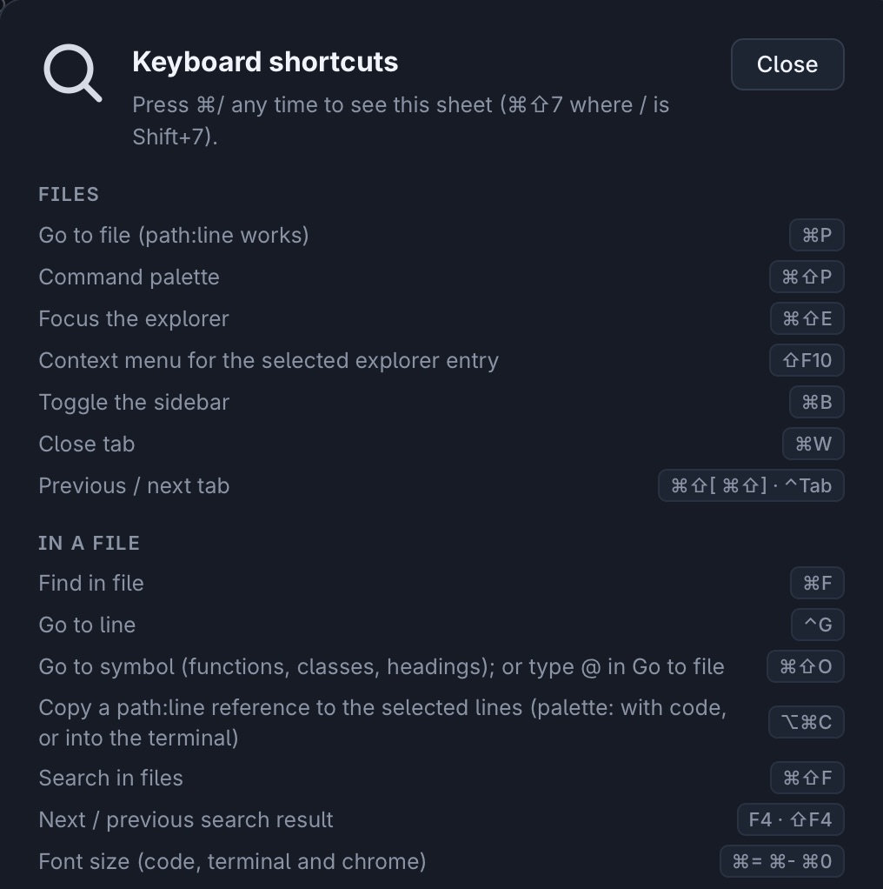
The cheat sheet uses your platform's key names. The whole app works from the keyboard, and lists, the palette and the terminal expose what they show to screen readers.
⌘/
Read anything
Code, Markdown, images and binaries open read-only, in the right view.
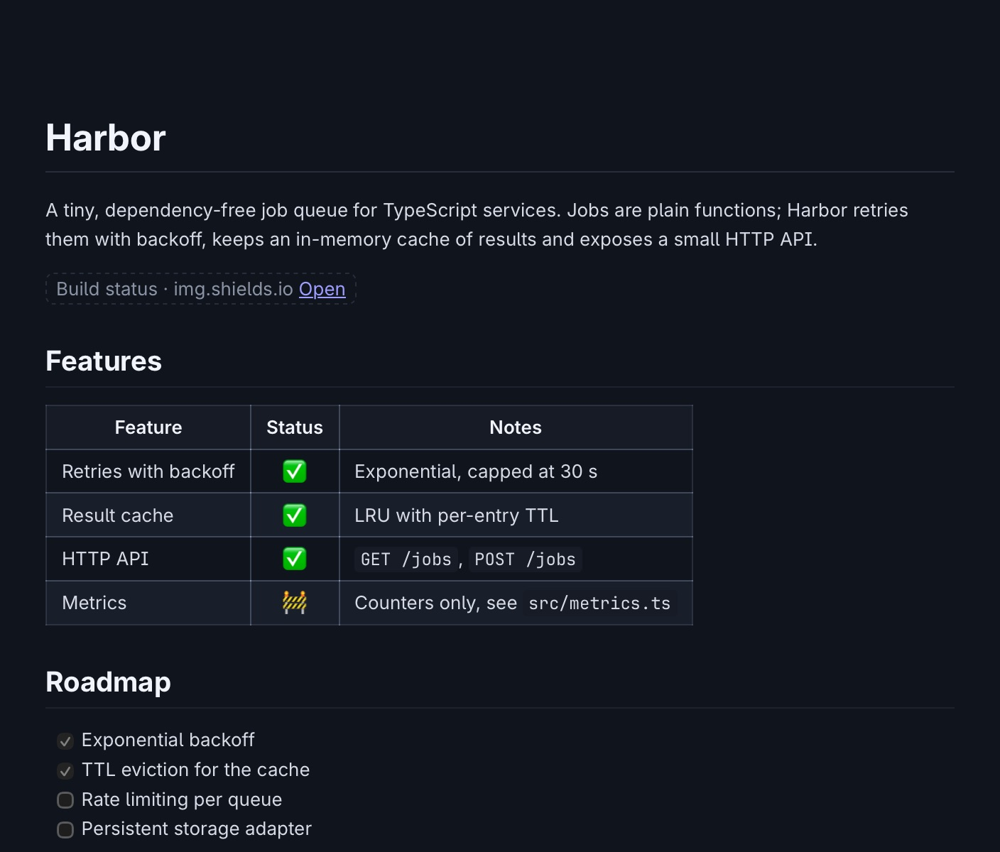
Markdown, rendered safely
READMEs and docs open rendered: GFM tables, task lists, strikethrough and highlighted code, with images from the repository. Raw HTML is shown as text and remote images never load: a placeholder names the host and links out. View source switches to the highlighted source; ⌘⇧O lists the headings.
Images
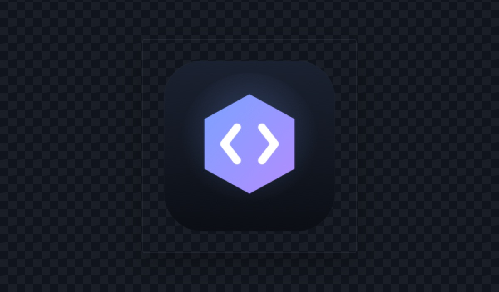
PNG, JPEG, GIF, WebP, AVIF, BMP, ICO and SVG open in an image viewer with Fit, 1:1 and zoom from 2% to 6400% (and TIFF and HEIC in the Mac app). SVGs switch to their source; other binary files get a hex dump.
Live while agents work
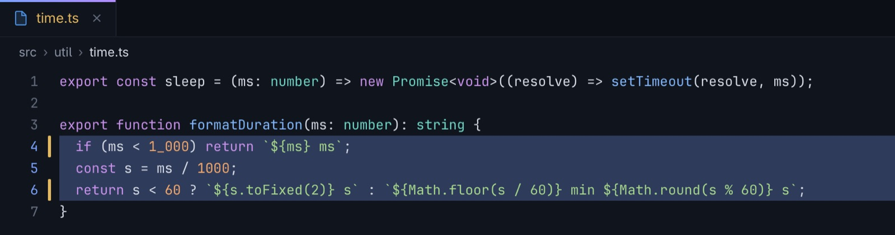
Files reload in place the moment they change on disk. The changed lines flash and get gutter markers, nothing you are reading jumps, and the Explorer dots changed files you haven't opened since.
Binary files
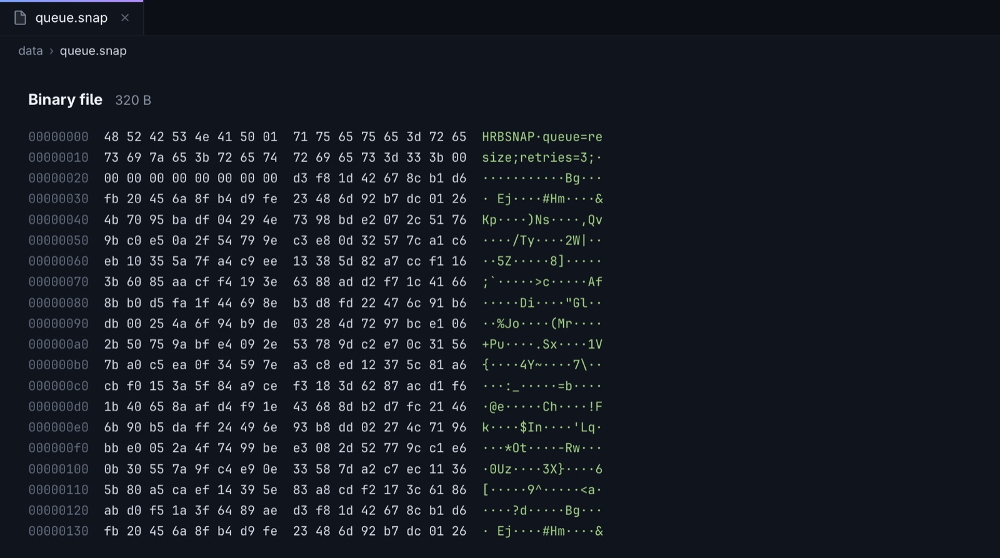
Anything that is not text opens as a hex dump of its first 4 KB, with offsets and printable characters. Text files over 8 MB open truncated with a notice, and very long lines are cut at 4,000 columns, so nothing can stall the view.
Start here
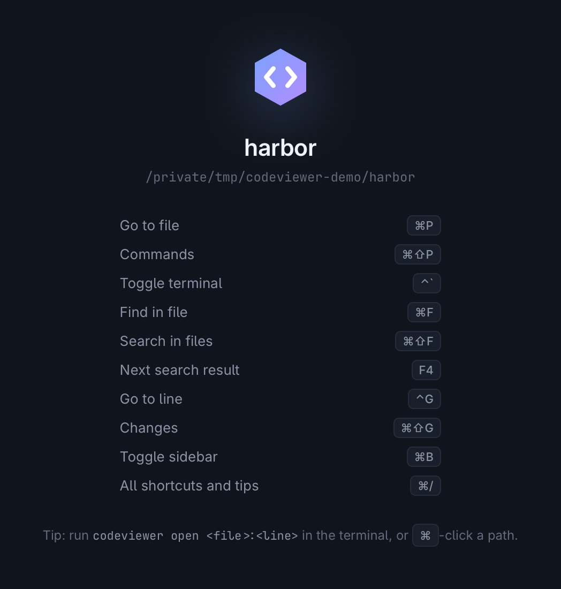
With no tab open, the window shows the folder and the shortcuts worth learning first. Pinned tabs come back on the next launch; a single click opens a preview tab (in italics) that the next one replaces.
Review with git
Everything git knows about the code in front of you, without ever writing to the repository.
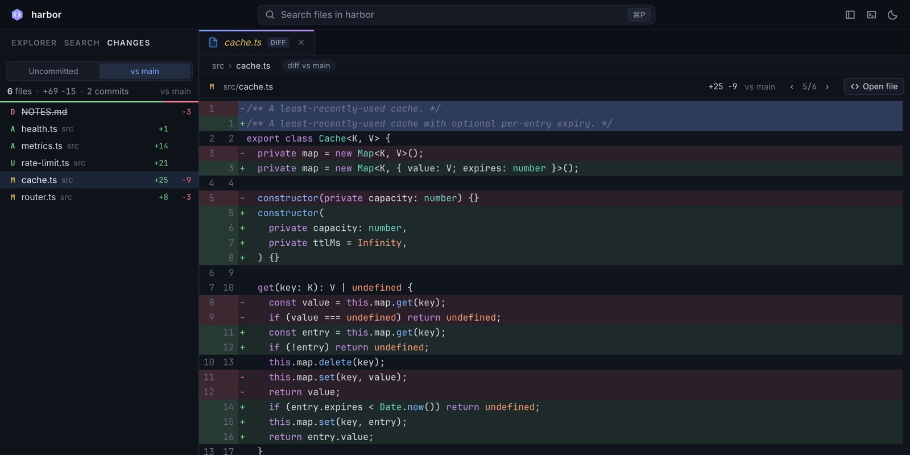
Review the branch
Lists every file the branch touched since it left main, or only what is uncommitted, with +/− counts. Each file opens as a read-only diff. ⌥F5 walks hunk by hunk and on to the next file, and reviewed files dim until they change again.
⌘⇧G⌥F5 / ⌥⇧F5
Peek at HEAD
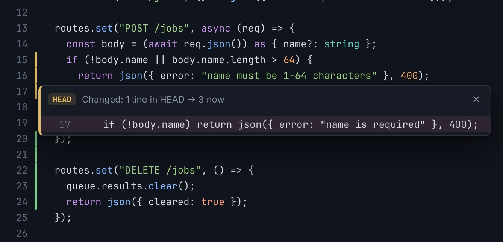
Gutter bars mark added, changed and deleted lines against HEAD. Click one to see what the last commit had there.
Inline blame
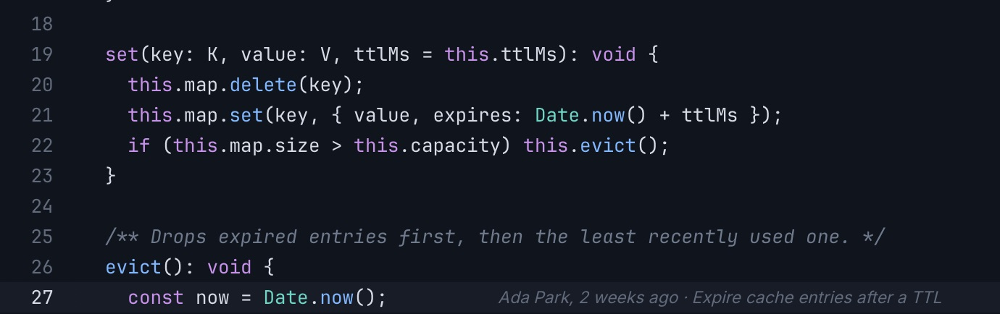
The active line names who changed it, when, and the commit's subject. Uncommitted lines say so.
File history
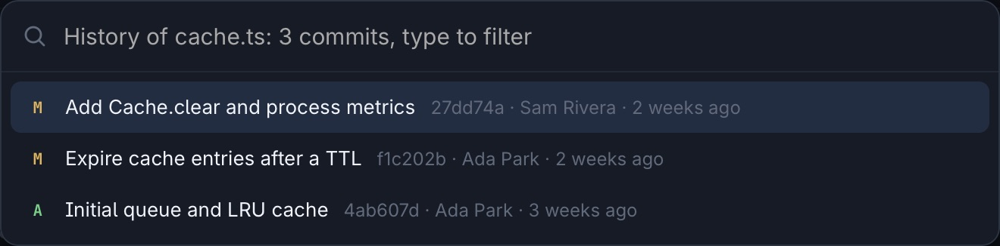
Up to 500 commits that changed the file, renames followed, newest first. Type to filter; Enter opens what that commit changed as a diff tab.
Status at a glance
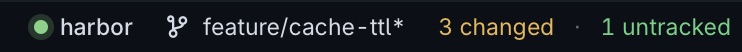
The branch with ahead/behind, merge or rebase state, stash count and change counts, all live as you, or an agent, edit, stage, commit or switch branch.
Work with your agent
A real terminal next to the code, and one key to tell the agent where to look.
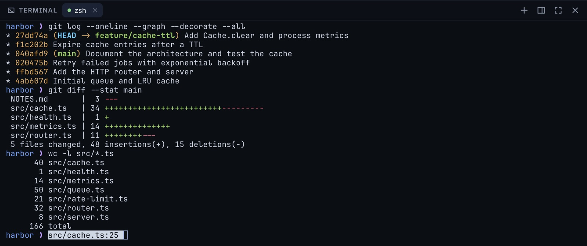
A real terminal
A native PTY with a from-scratch emulator: truecolor, mouse, alternate screen, bracketed paste, OSC 8 links and pixel-exact box drawing, so Claude Code, Codex, aider, vim and htop just work. ⌥⌘C copies path:line for the cursor or selection, Insert Reference in Terminal types it at the prompt, and ⌘-click on a path:line in the output opens it.
⌃`⌃⇧`⌥⌘C
Your layout
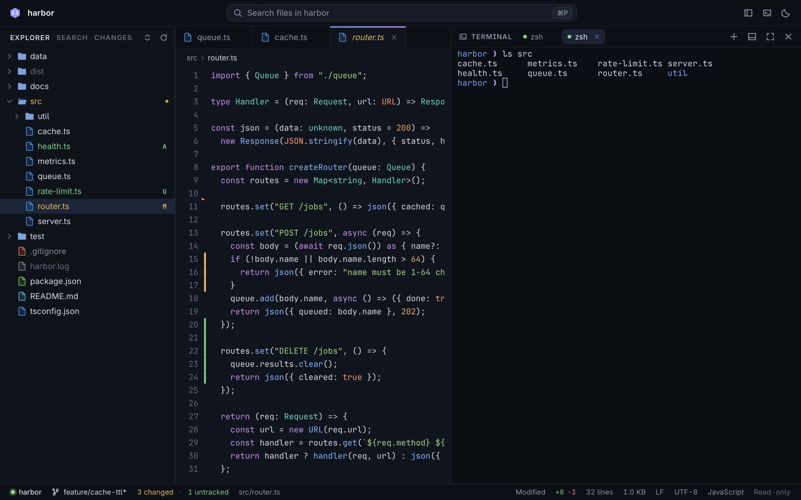
Several terminals as tabs, a panel at the bottom or on the right (Move Terminal Panel), maximized or hidden. Tabs are coloured by git status and the breadcrumb shows where a file lives. ⌘=⌘-⌘0 scale code, terminal and chrome together, and the moon button cycles System, Dark and Light themes.
⌃⇧`⌘⇧[ / ⌘⇧]⌘J⌘K
Signed updates
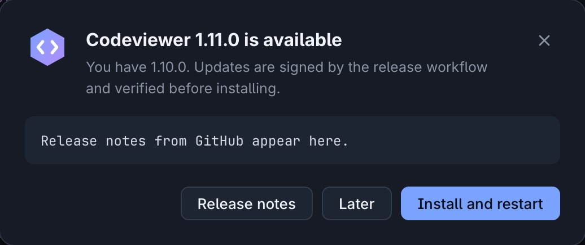
A launch-time check, which you can turn off, shows an update pill in the status bar when a release is out. Installing verifies the release's Ed25519 signature and the file's SHA-256 before an atomic swap and a restart. Check for Updates… is in the palette and the Mac app menu.
Private by design
Your code, your terminal and what you look at never leave your computer. There is no account, no cloud, no telemetry and no crash reporting: nothing to opt out of, because nothing is collected.
Local only
Codeviewer is a small server on 127.0.0.1 and a window that can talk only to it. Settings live in one JSON file in your profile; no browser history, cookies or cache are kept.
One optional request
The single outbound connection is a launch-time look at GitHub's releases API for a newer version. Switch it off with Toggle Automatic Update Checks or CODEVIEWER_NO_UPDATE_CHECK=1 and the app never opens a socket to the internet.
Read-only, by construction
It never writes to your files or your repository: files open read-only with symlink containment, git runs without hooks, filters or drivers and never touches the index. The terminal is yours; what you type there is the only way anything changes.
A shell in a window deserves care
Codeviewer serves a real terminal, so it was designed and then attacked by reviewers looking for a way in, round after round. Every confirmed finding was fixed and pinned with a test.
Only its own server
The Mac window blocks every request except its own local port, with a strict Content-Security-Policy on top. External links open in your browser, never inside the app.
No ambient credentials
A random 256-bit token lives in the URL fragment and a request header. No cookies, no token in process lists, Host and Origin checked on every request. Terminals get a narrower token that can only ask the viewer to open a file.
Hostile repos are fine
Git runs without filters, textconv, signature checks, fsmonitor or submodules, and never writes your index. Read the design and review notes.
Signed updates
The updater installs a release only when its SHA256SUMS carries a valid Ed25519 signature from the release key, downloads come from GitHub over https alone, and every file's SHA-256 is checked before an atomic swap.
Untrusted content stays text
Markdown previews are built without innerHTML: raw HTML is shown as text, remote images never load, link schemes are allow-listed and the policy never widens for a file.
Built in the open
Every release is built by GitHub Actions from a tagged commit with Sigstore provenance you can check yourself. Verify a download in four commands, or build it from source.
Download
The latest release. The apps are self-contained; the CLI binaries serve the viewer to any browser (codeviewer . --no-open).
Every release is built by GitHub Actions from a tagged commit, on a clean runner. Independent checks prove the file you have is that build: its checksum, the release signature, and where it was built.
Download the app, the checksum list and its signature
Expect Signature Verified Successfully. Needs OpenSSL 3 or newer (brew install openssl; the built-in one is LibreSSL). This is the same Ed25519 signature the in-app updater checks before installing anything.
This checks a Sigstore-signed provenance statement logged in a public transparency log. It proves the file came out of this repository's release workflow, at a specific commit. It does not depend on this website.
Install
Open the DMG and drag Codeviewer to Applications. The app is not notarized by Apple, so the first launch needs right-click → Open, or:
Expect Signature Verified Successfully. Needs OpenSSL 3 or newer. This is the same Ed25519 signature the in-app updater checks before installing anything.